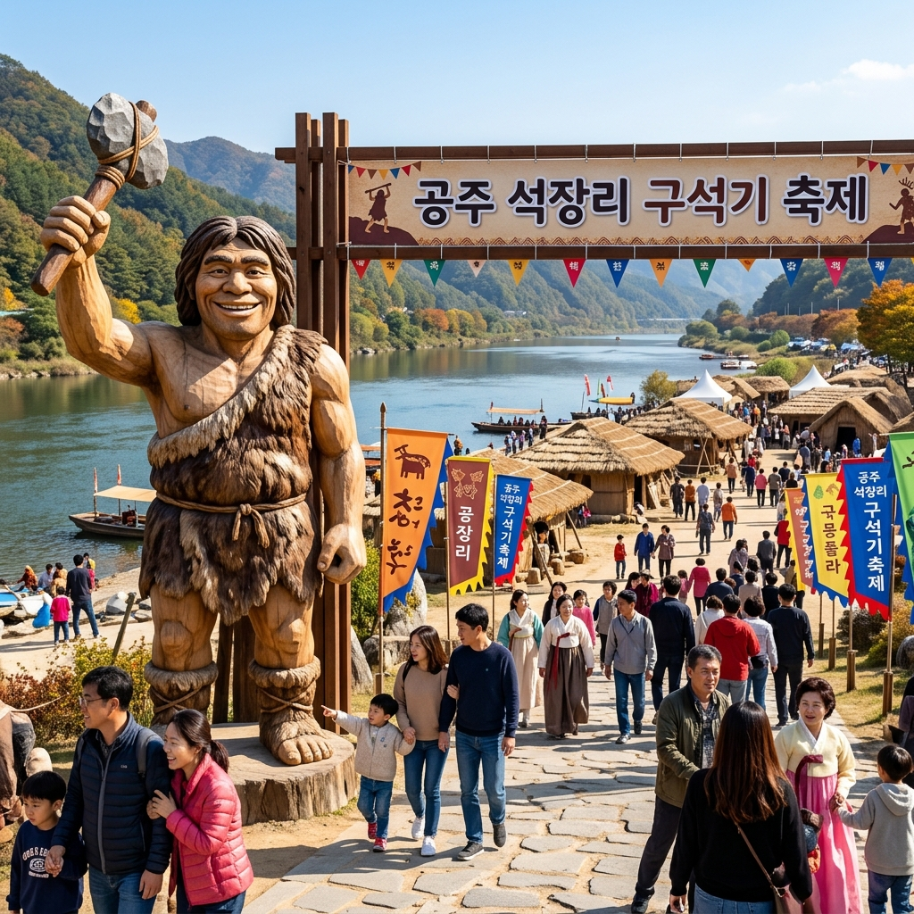
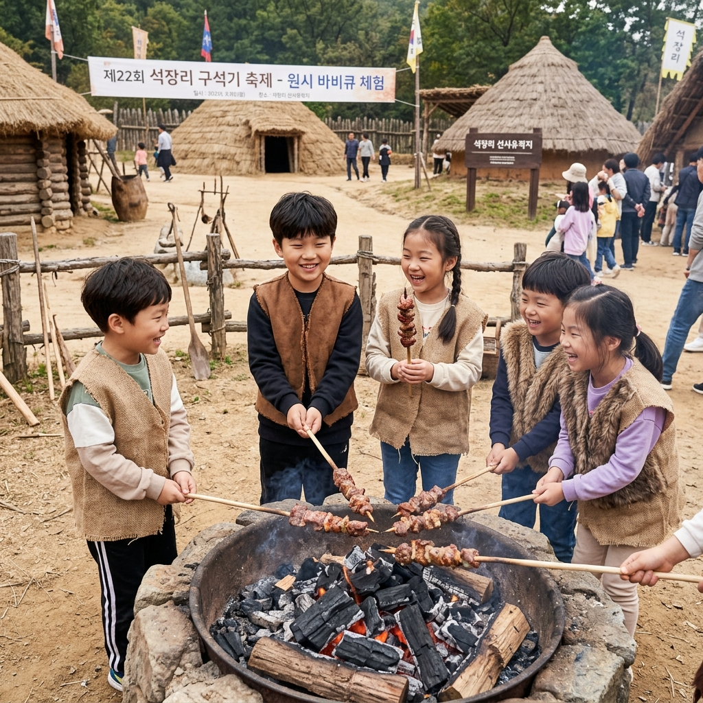

2026 공주 석장리 구석기축제 가이드: 아이와 함께 떠나는 시간 여행
금강 물줄기가 유유히 흐르는 역사 도시 충남 공주에서 수만 년 전 인류의 숨결을 느낄 수 있는 공주 석장리 구석기축제 2026이 개최됩니다. 교과서에서만 보던 뗀석기와 움집을 직접 체험하며 구석기 시대를 생생하게 경험할 수 있는 이번 축제는 교육적인 가치와 즐거움을 동시에 잡은 가족 나들이의 성지로 꼽히는데요. 핵심 체험 프로그램부터 주차 및 입장료 정보까지 에디터가 직접 정리한 꿀팁을 확인해 보세요.
1. 2026 공주 석장리 구석기축제 개최 정보
올해 축제는 2026년 5월 3일(일)부터 5월 5일(화) 어린이날까지 3일간 석장리 박물관 일원에서 펼쳐집니다. 석장리는 한국 구석기 유적의 발상지로 상징성이 매우 높은 곳인데요. 매년 어린이날 시즌에 맞춰 열리는 만큼 올해도 아이들을 위한 풍성한 이벤트가 가득 준비되어 있습니다.
특히 금강변을 배경으로 조성된 축제장은 시각적으로도 매우 아름답습니다. 구석기 시대를 테마로 한 다양한 조형물과 야간 조명이 어우러져 낮과 밤이 모두 즐거운 축제 분위기를 선사합니다. 역사 학습과 힐링을 동시에 즐길 수 있는 최고의 기회입니다.

과거로의 시간 여행을 알리는 축제장의 활기찬 입구 / AI 제작 이미지
2. 축제의 꽃: 구석기 시대 생존 체험 프로그램
가장 인기 있는 프로그램은 단연 구석기식 바비큐 체험입니다. 기다란 나무 막대에 고기를 꽂아 화로에 직접 구워 먹는 체험은 아이들에게 압도적인 인기를 끌며 매년 조기 매진되는 코스입니다. 고소한 고기 향과 함께 원시인들의 식생활을 몸소 체험해 볼 수 있습니다.
또한, 뗀석기 만들기와 원시인 움집 짓기 체험도 교육적으로 매우 훌륭합니다. 직접 돌을 깎아 도구를 만들고 짚을 엮어 집을 짓는 과정을 통해 당시 인류의 지혜를 배울 수 있습니다. 모든 체험은 안전 요원의 지도 아래 진행되므로 안심하고 참여하셔도 됩니다.
3. 석장리 박물관 상설 및 특별 전시 관람 팁
축제장 내 위치한 석장리 박물관은 축제 기간 동안 반드시 들러야 할 곳입니다. 한국 구석기 연구의 역사를 한눈에 볼 수 있는 상설 전시실은 물론, 올해는 '구석기인의 예술 세계'라는 주제의 특별 기획전도 마련되어 있습니다.
아이들의 눈높이에 맞춘 인터랙티브 전시물들이 많아 지루할 틈이 없습니다. 특히 파노라마 영상실에서 상영되는 구석기 시대 생활상 영상은 몰입감이 뛰어나 추천하는 관람 포인트입니다. 박물관 입구에 비치된 스탬프 투어 북을 활용하면 더욱 재미있게 관람하실 수 있습니다.

아이들이 직접 고기를 굽는 이색적인 바비큐 체험 현장 / AI 제작 이미지
4. 금강변 야간 경관 및 드론쇼 감상 전략
해질녘이 되면 금강변은 환상적인 야간 조명으로 변신합니다. 물 위에 뜬 유등과 구석기 테마 조형물들이 불을 밝히며 몽환적인 분위기를 자아내는데요. 축제 둘째 날 저녁에는 금강 하늘을 수놓는 드론 라이트쇼가 예정되어 있어 놓치지 말아야 할 장관을 연출합니다.
드론쇼 명당은 박물관 앞 잔디 광장입니다. 돗자리를 미리 준비해 자리를 잡으시면 더욱 편안하게 관람하실 수 있습니다. 강바람이 다소 차가울 수 있으니 가벼운 담요나 겉옷을 챙기는 센스를 잊지 마세요.
5. 주차장 이용 및 무료 셔틀버스 운행 정보
축제 기간에는 박물관 인근 도로가 매우 혼잡하므로 임시 주차장 이용을 권장합니다. 공주 상신리 혹은 금강 신관공원에 마련된 임시 주차장에 차를 대고 무료 셔틀버스를 이용하시는 것이 시간과 에너지를 아끼는 가장 좋은 방법입니다.
셔틀버스는 오전 9시부터 축제 종료 시까지 수시로 운행됩니다. 대중교통을 이용하실 경우 공주종합버스터미널에서 축제장까지 연결되는 노선버스를 확인해 보세요. 자차 이동 시에는 반드시 '공주 석장리 구석기축제 주차장'을 검색하여 안내 요원의 지시를 따르시기 바랍니다.
6. 공주 방문 시 놓치지 말아야 할 3대 미식
공주 여행의 또 다른 즐거움은 바로 미식입니다. 가장 유명한 것은 역시 공주 알밤입니다. 축제장에서도 갓 구운 군밤이나 밤 빵을 쉽게 접할 수 있으며, 고소한 맛이 일품입니다.
또한, 공주의 명물 칼국수와 짬뽕도 추천합니다. 공주 시내에는 역사가 깊은 칼국수 거리와 5대 짬뽕집이 있어 줄 서서 먹는 재미가 쏠쏠합니다. 마지막으로 담백하고 고소한 인절미의 유래가 된 곳답게 떡집 투어도 추천드리는 코스입니다.
노을 지는 금강과 어우러진 평화로운 축제장의 저녁 / AI 제작 이미지
7. 입장료 및 할인 혜택 총정리
축제장 입장료는 성인 기준 3,000원 내외로 매우 저렴하게 책정되어 있습니다. 특히 공주시와 자매결연을 맺은 지자체 주민이거나 공주 사이버 시민으로 등록하신 분들은 추가 할인 혜택을 받으실 수 있으니 방문 전 확인해 보세요.
65세 이상 어르신이나 미취학 아동은 증빙 서류 지참 시 무료 입장이 가능합니다. 또한, 입장권 금액 중 일부는 공주 사랑 상품권으로 환급해 주어 축제장 내 먹거리 장터에서 현금처럼 사용하실 수 있으니 경제적이기까지 합니다.
8. 아이와 동반 시 필수 준비물 체크리스트
장시간 야외 활동이 필요한 만큼 자외선 차단제, 모자, 선글라스는 필수입니다. 특히 강가라 그늘이 부족할 수 있으니 양산을 준비하시는 것이 좋습니다. 체험 활동 중 옷이 더러워질 수 있으므로 여벌의 옷과 물티슈도 꼭 챙기시기 바랍니다.
또한, 개인 수분 보충을 위한 텀블러와 간단한 간식을 담은 가방을 준비하세요. 아이들이 원시인 복장을 대여해 입고 돌아다닐 때 신을 수 있는 편한 샌들이나 운동화도 중요합니다. 박물관 내부와 야외를 번갈아 다니므로 신고 벗기 편한 신발이 최고입니다.
9. 에디터가 전하는 공주 석장리 축제 마지막 조언
공주 석장리 구석기축제는 단순한 오락을 넘어 우리 인류의 뿌리를 찾아가는 인문학적 여행입니다. 아이에게는 교과서 밖의 살아있는 공부가 되고, 어른에게는 일상을 떠나 자연 속에서 여유를 찾는 시간이 될 것입니다.
이번 어린이날, 사람 많은 놀이공원 대신 푸른 금강과 역사가 숨 쉬는 공주 석장리로 떠나보시는 건 어떨까요? 수만 년의 시간을 뛰어넘어 조상들의 지혜와 만나보세요. 분명 가족 모두에게 잊지 못할 특별한 하루가 될 것입니다.
#공주석장리구석기축제
#5월가볼만한곳
#어린이날가볼만한곳
#공주여행
#역사체험
#가족나들이추천
#석장리박물관
#공주맛집
#충남축제
#구석기바비큐